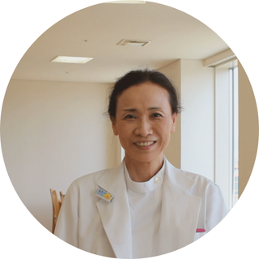
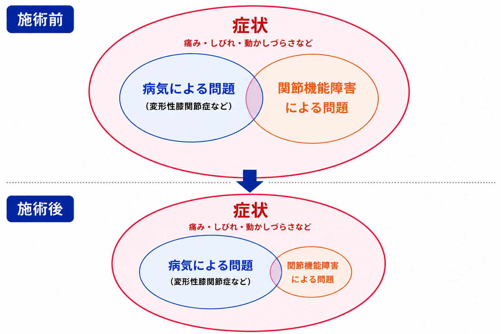
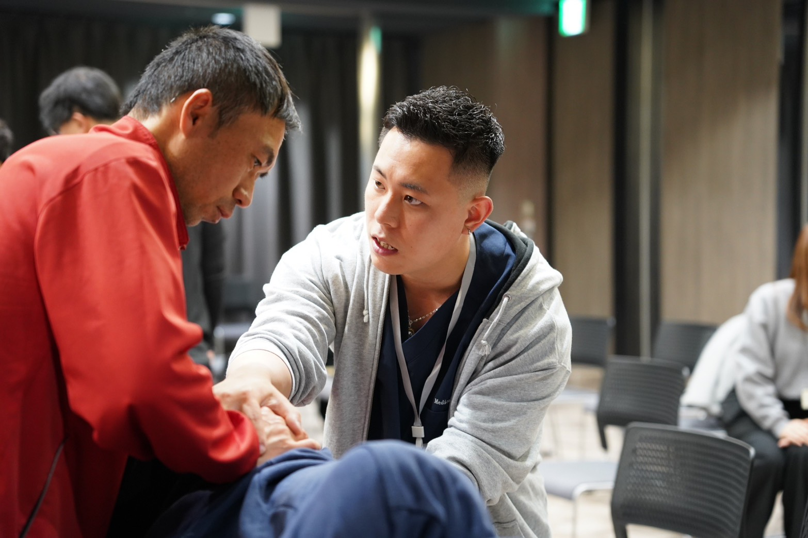

膝の痛みに悩むあなたへ
トイレの立ち座り。
歩く。
階段をのぼる。
痛みを気にせず、スッとできる毎日を目指しませんか？
今はまだなんとかできている、
「便座からの立ち座り」「スーパーへの買い物」「玄関の上がり框を上り下りする」
そんな当たり前の生活を、痛みを我慢したり、少しずつ諦めてしまう前に。
今できていることを守り、諦めていた日常を、もう一度。
こんな悩みありませんか？
- ヒアルロン酸注射を5回以上続けている。
- 痛み止めを毎日飲んでいる。
- 週2〜3回、病院でリハビリを受けている。
それでも、膝の痛みが治らない。
言われたようにしているのに、去年より、できる事が減っている。
「なぜ治らないのだろう。」
そう感じているなら、一つ、考えてみてほしいことがあります。
膝以外にあるとしたら──。
そして、その原因が
レントゲンには写らないものだとしたら──。
病院勤務時代、こんな方がいました。
90代女性のAさんは、約20年間、膝の治療を続けていました。
ヒアルロン酸注射や痛み止め、リハビリを受けながら、担当医からは人工関節を勧められていたそうです。
しかし、
「どうしても手術はしたくない」
そう話され、ヒアルロン酸や痛み止めなどで治療を続けてこられた方でした。
それでも痛みは強くなり、私が担当した頃には、横になっていても膝が痛み、夜も眠れない状態でした。
そこで私は、痛む膝には一切触らず、背骨や骨盤を評価し、問題が見つかった関節へ施術を行いました。
すると、その場でAさんから、
「痛みが消えた」
と言われました。
その翌日、リハビリでAさんのもとを訪れると、
「久しぶりに痛くない朝を迎えました。」
と話してくださいました。
あなたも、こんな事を言われていませんか？
Aさんは、病院でこんな説明を受けていたそうです。
あなたも、同じようなことを言われたことはありませんか？
「軟骨がすり減っていますね」
「ヒアルロン酸注射を続けましょう」
「そろそろ人工関節を考えましょう」
そう言われると、
「軟骨がすり減っているから痛い」
「ヒアルロン酸を続ければ良くなる」
「それでもダメなら、人工関節しかない」
そう思うのも当然だと思います。
でも、本当にそうなのでしょうか？
ここで、一つ知ってほしいことがあります。
実は、軟骨そのものには痛みを感じる神経がありません。
「それが今の膝の痛みの原因であること」は、
同じではないのです。
そして、もう一つ考えてみてください。
「あと何回かヒアルロン酸を続ければ……」
そう思って注射を受け続けてきたのではないでしょうか。
それでも、今も痛みが残っている。
だとしたら、本当に、今までと同じ治療を続けていて良いのでしょうか？
そして、
最後に残された選択肢は、本当に人工関節だけなのでしょうか？
先ほどのAさんを思い出してください。
私は、痛む膝には一切触れませんでした。
それでも、膝とは別の場所を施術すると、その場で痛みに変化が起きました。
なぜでしょうか？
実は、レントゲンでは分からないところに、これまで見落とされていた問題が隠れていることがあります。
では、その正体とは何なのでしょうか？
なんで膝って痛くなるの？
ここまでの話で、膝が痛いからといって、その原因まで膝にあるわけではないということは、なんとなく分かっていただけたかと思います。
では、ここで一つ質問です。
私がAさんのどこを施術したのか、分かりますか？
股関節？ 足関節？
ちょっと考えてみてください。
・
・
・
正確に言うと、骨盤と背骨にある関節の「小さな動きのズレ」です。
「えっ？」って思いませんでした？
膝が原因じゃないとしても、「じゃあ、股関節とか足首じゃないの？」って思いますよね？
でも実は、こうした膝の痛みのように、ぶつけたり、転んだりしたわけでもないのに、いつの間にか出てくる痛み。
その原因が関節にあることは、1960年代には、すでにアメリカの整形外科医によって提唱されていました。
それを何て言うかというと……
って言います。
つまりAさんは、この関節機能障害によって痛みが出ていたんです。
私は、ここに大きな違いがあると考えています。
それまで行われていたのは、「痛み」という現象に対する治療。
でも私が行ったのは、「痛みを出している関節はどこか」という原因に対して。
Aさんの場合、その原因として私が見つけたのが、膝ではなく、骨盤や背骨にあった「関節機能障害」だったんです。
これまでAさんは、痛みを抑える治療を続けてきた。でも、「なぜ痛みが出ているのか」という原因には、手をつけられていなかった。
私は病院で働いていた頃、そんな方を何人も見てきました。
あなたはどうでしょうか？
なぜ、膝に触らなくても痛みが変わったの？
では、なぜ膝ではなく、背骨や骨盤を施術すると痛みが変わるのでしょうか？
実は、痛みが伝わる仕組みには、一般的によく知られているものだけではありません。
背骨などにある小さな関節には、普段はほとんど反応していない神経があります。
ところが、何らかのきっかけでこの神経が反応し始めると、その情報が脳へ伝わり、痛みに関わることがあります。
だから、痛む膝だけに治療を続けても、痛みを出している場所が別にあれば、そこには手がついていないことになります。
Aさんが、まさにそうだったんです。
私が膝に触れず、背骨や骨盤の関節へ施術したのは、そのためです。
さらに、もう一つ問題があります。
背骨や骨盤などの関節がうまく動かなくなると、身体はその動きを別の場所で補おうとします。
その負担が膝に集まれば、痛みが出るのは膝です。
では、この「関節機能障害」は、どうやって見つけて施術するのでしょうか？
関節機能障害はどうやって見つけて、施術するの？
関節機能障害は、ただ痛いところを触ったり、筋肉をほぐしたりすれば分かるものではありません。
まして、背骨の関節だからと言って、ボキボキ音を鳴らしたりするのは、逆に悪化させる要因になります。
どの関節に問題があるのかを見つけ、そこへ正しく施術するためには、専門的な評価と緻密な技術が必要になります。
当院では、施術者の感覚だけを頼りに身体を触るのではありません。
関節がどのように動き、神経や筋肉とどう関係しているのか。
そうした基礎医学と、作業療法士として延べ18,000人の患者さんに関わってきた臨床経験をもとに、身体を評価・施術します。
私が病院で担当してきたのは、
「ベッドから立ち上がれない」
「トイレまで歩くのがつらい」
「上がり框の上り下りがつらい」
といった、痛みやしびれ、身体の動かしづらさによって、実際の生活に困っている方々です。
そうした生活を妨げている身体の問題に、より専門的に対応するために学んだのが、関節に対する評価・施術技術です。
私自身、そのための専門的な知識と技術をPhysio Labで学んできました。
Physio Labが伝えている知識・技術を、医師も推薦しています
「うちの整形外科の先生でも知らない！」

「当院の整形外科の医者も、Physio Labさんが伝えていることを絶対に知りません。
医者という立場の私も知らないことばかりで、大変勉強になりました！」
1989年 福井医科大学卒業
1997年 大阪大学医学系大学院博士課程（ウイルス学）修了
1997〜1999年 スタンフォード大学 リサーチフェロー
2009年〜 北野病院 小児科部長・感染症部長などを歴任
Aさんだけではありません
Aさん以外にも、私は病院勤務時代、膝の痛みに悩む多くの方を担当してきました。
ここからは、実際に私が担当した方に、どのような変化があったのかをご紹介します。
先ほどご紹介したAさんについても、施術後に生活がどう変わっていったのかをご紹介します。
※以下は、私が病院勤務時代に実際に担当した患者さんの事例です。個人情報保護のため、写真や動画は掲載していません。
「えっ、なんで？ 膝、触ってないよね？」
歩くことが怖かった70代女性・BさんBさんは、歩くたびに強い膝の痛みがあり、病棟ではサークル歩行器を使って移動されていました。
リハビリを受けていましたが、痛みは残っていました。
私が代行で介入した時、評価・施術したのは痛い膝だけではありませんでした。背骨などの関節の状態を評価し、身体の反応をみながら膝とは離れた関節へ施術を行いました。
施術後、Bさんに状態を聞くと、驚いた表情で、
「えっ、なんで？ 痛くない！ なんで？ 膝触ってないよね？」
と話されました。
さらに立ち上がっていただくと、それまで上肢に頼っていた立ち上がりにも変化がみられ、よりスムーズに立てるようになりました。
数日後、
「今では杖で歩けるし、手を離しても数歩なら痛みなく歩けるんです。」
と話してくださいました。
歩くことへの不安も少しずつ減り、笑顔で喜ばれていた姿が今でも印象に残っています。
「久しぶりに痛くない朝を迎えました。」
夜も眠れなかった90代女性・Aさん施術前は、夜になると膝がズキズキ痛み、寝返りを打つたびに目が覚めてしまう毎日でした。
「寝ているときも膝がズキズキして、毎晩ほとんど眠れませんでした。」
夜だけではなく、昼間も十分に眠ることができず、目の下には大きなクマができ、表情にも元気がありませんでした。
私は、痛い膝だけではなく、背骨や骨盤などの関節まで評価し、問題が見つかった関節へ施術を行いました。
ある日、Aさんは、
「久しぶりに痛くない朝を迎えて、嬉しくて涙が出ました。」
と話してくださいました。
その後、朝まで眠れる日が増え、目の下のクマも目立たなくなり、表情も少しずつ明るくなっていきました。
私にとって印象的だったのは、単に「膝の痛みが減った」ということではありません。
眠れる生活が戻ってきたことです。
「いつ痛みが来るか分からない。」
痛みだけではなく、笑顔まで戻った80代女性・DさんDさんは、
- 立ち上がる時。
- 歩こうとした時。
- 身体の向きを変えた時。
突然、膝へ強い痛みが走る状態でした。
「いつ痛みが来るか分からない。」
そんな不安から、表情も暗く、気持ちも沈んでおられました。
主治医からロキソニンを処方されていましたが、痛みは思うように改善しませんでした。
そこで、膝とは離れた関節まで評価し、問題が見つかった関節へ施術を行いました。
施術を始めて3回目頃には、痛みがほとんど気にならなくなりました。
その後、ロキソニンの処方も終了となり、退院の日には笑顔で感謝の言葉をかけてくださいました。
痛みだけではなく、表情まで明るくなられていたことを、今でもよく覚えています。
このような変化を感じられた方もいらっしゃいます。
80代女性・Cさん
「膝が痛くて、立って洗面をするのも辛かったんです。」
↓
「今は立った姿勢でも、支えがあれば不安なく過ごせます。」
70代男性・Eさん
他院で「偽痛風」と診断され、膝に触れられるだけでも激痛がありました。
施術後には、
「まさか歩いても痛くなくなる日が来るなんて……。」
と話してくださいました。
もちろん、これらは個々の患者さんの経過であり、すべての方に同じ結果をお約束するものではありません。
ただ、私が病院勤務時代から現在まで一貫して経験してきたことがあります。
それは、膝だけを見ていた時には分からなかった問題が、膝から離れた場所にあったという事です。そこを施術すると痛みが軽減・消失し、生活を送りやすくなった方が何人もいたという事実です。
生活のしづらさには、病気そのものによる問題と、関節機能障害による問題の両方が影響していることがあります。
当院で施術するのは、その中にある「関節機能障害」です。

もしあなたも、Aさんと同じように、ヒアルロン酸や痛み止めなどの治療を受けているのであれば、一度違う観点から施術を受けてみてはいかがでしょうか？
初回カウンセリング＋評価＋施術
通常 15,000円（税込） ↓ 初回 2,980円（税込）9月15日まで／1日5名まで
「どうして、初回だけこんなに安いの？」
そう思われるかもしれません。
理由は一つです。
膝の痛みに本当に悩んでいる方に、一人でも多くこの施術を受けてほしいからです。
そして、痛みのために、できていた生活まで諦めてほしくないからです。
そのため、まず一度この施術を受けていただけるよう、9月15日まで初回2,980円でご案内しています。
ただし、私一人ですべての評価から施術まで担当しているため、1日に対応できる人数には限りがあります。
そのため、初回体験は1日5名までとさせていただいています。

井本大揮
作業療法士 FJTアドバンス修了私は作業療法士として、病院で8年間、延べ18,000人の患者様を担当してきました。
その中で、人工関節などの治療を受けても痛みが残り、
「立ち上がるのがつらい」
「歩くのが怖い」
「夜も痛くて眠れない」
そんな悩みを抱えている方を何人も担当してきました。
そのたびに私は、
「何かがおかしい。」
と感じるようになりました。
痛い場所を治療している。
薬も飲んでいる。
リハビリも続けている。
それでも、痛みが残っている。
そこで私は、今までとは違う視点から身体を見る必要があるのではないかと考え、関節に対する評価・施術技術を学び始めました。
そして実際にその技術を用いるようになってから、痛みが軽くなるだけではなく、
「立ち上がれるようになった」
「また歩けるようになった」
「夜、眠れるようになった」
と、生活そのものが変わっていく方を何人も見てきました。
一方で、不要な手術や過度なリハビリによって、むしろ状態を悪くしているケースも見てきました。
だからこそ、
「こうした不幸な状況を作りたくない」
「本当にその人にとって必要ではない手術を受ける方を、一人でも減らしたい」
そう思い、医療現場を離れ、Functional Life Labを開業しました。
そして、Functional Life Labが目指しているのは、痛みを軽くすることだけではありません。
生活のしづらさをなくしていく。
そして、あなたが望む生活を取り戻すために、一緒に並走していく。
それが、Functional Life Labのミッションです。

井本さんは、関節に特化した治療技術のスペシャリストです。
私たちの提供する最高のコースを受講されました。
他の技術では全く効果を実感されていない方には、最後の砦になる可能性があります。
井本さんほど、患者さんに真摯に対応し、結果を出してくれる治療者は他にいません。
あなたがどこに行っても思うような結果が得られていないのでしたら、井本さんはきっとあなたの望む結果を出してくれます。

「もう良くならない」と諦める前に、一度相談してほしい治療院です。
痛みのある場所だけを見るのではなく、「なぜ、その症状が繰り返されているのか」まで徹底的に考え、一人ひとりの身体と向き合っています。
これまで色々な治療を受けても変化を感じられなかった方、手術しかないと言われ悩んでいる方にこそ、知ってほしい場所です。
まずは、ご自宅で試してみませんか？
ご自宅で、お一人でもできる体操をLINEで無料配信しています。
この体操は、痛みを軽減する目的で、私が病院勤務時代にも実際に患者様へお伝えしてきたものです。
実際に「楽になった」と話された方もいらっしゃいました。
まずはご自身で、一度試してみてください。
施術をご希望の方へ
Functional Life Labでは、大塚・浅草の2か所で施術を行っています。
大塚：JR山手線 大塚駅から徒歩1分
浅草：都営浅草線浅草駅から徒歩2分
※詳しい場所は、ご予約後にお伝えします。
営業時間：10:00〜20:00
不定休／完全予約制
初めての方へ｜ご来院から施術までの流れ
まずは、今の痛みや身体の状態について詳しくお聞きします。
「トイレから立ち上がるのがつらい」
「買い物へ行くのが怖くなった」
「夜、痛みで目が覚めてしまう」
など、今どんな生活動作に困っているのかもお聞かせください。

痛い膝だけではなく、背骨・骨盤・股関節・足首などの関節も評価します。
特に背骨は必ず評価し、関節の小さな動きに問題がないかを見ていきます。

評価によって問題が見つかった関節に対して、施術を行います。
痛い膝を無理に動かしたり、強い力でボキボキしたりする施術ではありません。
身体の反応を見ながら、一人ひとりの状態に合わせて進めていきます。

評価・施術を通して分かった身体の状態や、膝に負担がかかっていると考えられる理由についてご説明します。
そのうえで、今後どのように改善を目指していくのか、必要な施術や来院の目安についてもお伝えします。
その場で今後の通院を決める必要はありません。
説明を聞いたうえで、納得してからお決めください。

「まだ歩けるから大丈夫」と、先延ばしにしていませんか？
今はまだ、
- トイレは自分でできている。
- スーパーへ買い物に行ける。
- 階段も、時間をかければなんとか上れる。
だから、
「もう少し様子を見よう」
と思われるかもしれません。
でも、膝が痛むたびに、
- 「あそこは階段しかないから」と、行きたい場所を諦める。
- 買い物へ行く回数を減らす。
- 歩く距離を、少しずつ短くする。
そんなふうに、痛みに合わせて生活を変えることが増えていませんか？
「何もしないで、もう少し様子を見る」
もちろん、それも一つの選択です。
でも、その間にも生活は少しずつ変わっていきます。
この先、
トイレへ行くことが、今よりつらくなったら。
階段を理由に、行かない場所が増えていったら。
買い物や外出を、ご家族に頼ることが増えていったら。
そして、
「家族に負担をかけたくない」
そう思っていた自分が、少しずつ誰かの手を借りなければ生活しづらくなっていったら。
その時、
「まだ自分でできていた時に、何かしておけばよかった」
そう思うかもしれません。
だから私は、
「まだ自分でできている今だからこそ」
一度、身体の状態を考えてほしいと思っています。
- 誰の手も借りず、自分でトイレができる。
- 自分の足で、行きたい場所へ行ける。
- できる限り家族に負担をかけず、自分らしく生活できる。
そんな今の生活を、これからも続けていくために。
人工関節を決める前に、今まで見つけられていなかった問題がないか、一度評価を受けてみませんか？
とはいえ、
「一度行ったら、何度も通わないといけないのでは？」
「高い回数券を勧められないかな？」
そんな不安もあると思います。
無理な回数券販売や勧誘は行いません。
初回を受けたからといって、その場で今後の通院を決める必要もありません。
説明を聞いたうえで、納得してからお決めください。
この初回は、ただ一度施術を受けて終わりではありません。
「どうして今まで良くならなかったのか？」
その答えを、一緒に探すための初回です。
膝だけではなく、これまでとは違った視点から評価し、今まで見つけられていなかった問題がないかを見ていきます。
問題が見つかれば実際に施術し、そのうえで、今後どのように改善を目指していくのかをご説明します。
初回では、ここまで行います
- 今困っている痛みや生活上のお悩みを詳しくお聞きします
- 膝だけでなく、背骨・骨盤などの関節も評価します
- どこに関節機能障害があるのかを見つけます
- 問題が見つかった関節へ施術します
- 評価した身体の状態と、今後の施術方針をご説明します
ここまで含めて、
初回カウンセリング＋身体評価＋施術
通常 15,000円（税込） ↓ 初回 2,980円（税込）9月15日まで／1日5名まで
私一人ですべての評価から施術まで担当しているため、1日に対応できる人数には限りがあります。
そのため、初回体験は1日5名までとさせていただいています。
このような方におすすめです
- 病院へ通っても改善しなかった方
- 「年齢のせい」「軟骨がすり減っている」と言われた方
- ヒアルロン酸注射や痛み止めを続けても、時間が経てば戻る方
- 人工関節を勧められ、悩んでいる方
「私のような状態でも受けていいの？」と思われた方も、まずはご相談ください。
当院では、診断された病気そのものではなく、今の痛みや生活のしづらさに「関節機能障害」が関係していないかを評価します。
安心してご相談ください
- 国家資格（作業療法士）を持つ施術者が担当します
- 強く押したり、ボキボキ鳴らす施術は行いません
- 無理な回数券販売や勧誘は行いません
「どうして今まで良くならなかったのか？」
これまで見つけられていなかった問題がないか、一度ご自身の身体で確かめてみませんか？
まずは、ご自身の身体に何が起きているのかを知るところから始めてみてください。
最後に
ここまで読んで、
「自分もそうかもしれない。」
そう感じた方もいらっしゃると思います。
私が目指しているのは、痛みを軽くすることだけではありません。
自分の足で歩き、行きたい場所へ出かける。
できる限り家族の手を借りず、自分らしく生活する。
そんな当たり前の生活を守ることです。
人工関節を決める前に、まだできることがあるのであれば、その可能性を一緒に探したいと思っています。
まず一度、今まで見つけられていなかった問題がないか、身体の状態を見直してみませんか？
まだ施術を受けるか迷っている方は、LINEでのご相談だけでも大丈夫です。
初回カウンセリング＋評価＋施術
通常15,000円（税込） ↓ 初回2,980円（税込）9月15日まで／1日5名まで
施術場所
大塚・浅草の2か所
JR山手線 大塚駅より徒歩1分／都営浅草線 浅草駅より徒歩2分
※詳しい場所は、ご予約確定後にお伝えします。
受付時間：10:00〜20:00
不定休・完全予約制
LINEで「ご希望の場所（大塚／浅草）」と「ご希望日時を2〜3候補」をお送りください。